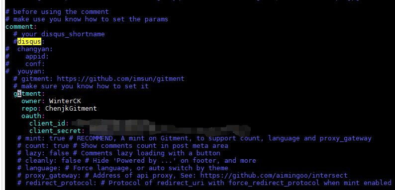
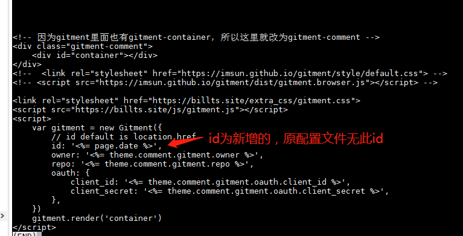
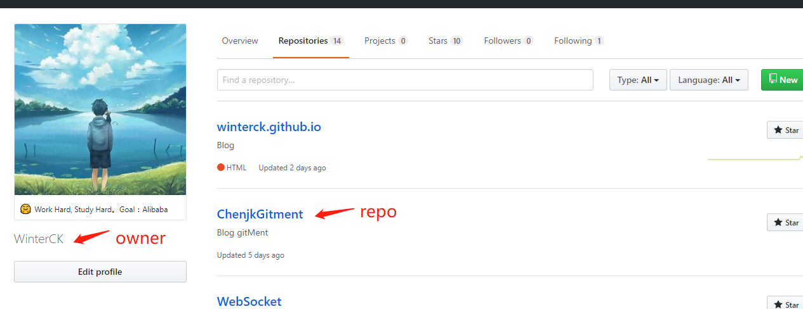

本文解决了hexo博客添加gitment时报错 Error: Comments Not Initialized 以及 Error：validation failed 的解决整理
今天再给博客添加评论模式（使用gitment）时，发现一直有报错，调的我甚是崩溃啊。不过还好解决了。总结如下
Error: Comments Not Initialized & Error：validation failed
首先这个是跟你评论的主题有关的，因为改的时候实际上是改的主题中的_config.yml文件，首先先看主题中的_config.yml加评论的模式，我的主题是这种格式的。

可以看到是comment下的gitment配置。所以进入主题下的 /themes/{你的主题}/layout/comment 下可以看到有gitment.ejs, 这里就是相关的配置。
先说明一下，Error：validation failed 的报错是由于gitment 默认的id是页面的id，也就是你的 xxxxx.md，而这个id是必须要小于50个字符的， 如果大于50个字符，就会报错 Error：validation failed。这是我的gitment.ejs 代码。

由于之前是无id的，而我新增的博客文章基本都是N多个中文字，导致超出50字符，所以添加代码 id: '<%= page.date %>', 千万注意在冒号后面要一个空格， 同时后面要有一个英文逗号 ,
我之前就是因为忘记了加逗号导致后面还是报错，又看了好几次才发现问题。
Error: Comments Not Initialized 这个问题是由于可能有多个原因。
首先，替换配置的css和js，可以看到上图中我已经替换了，我这个是中文的配置。
1 | <link rel="stylesheet" href="https://billts.site/extra_css/gitment.css"> |
英文的配置如下，不过我没试过，请自行尝试吧~
1 | <link rel="stylesheet" href="https://jjeejj.github.io/css/gitment.css"> |
第二，检查主题的_congig.yml 。里面的owner: xxx 以及 repo: xxx ,我自己的配置在上面的图中都有，其中owner建议直接为个人的github用户名， repo则需要你新建一个repository，然后把repository的名字填上。如下图
如此再重新执行
1 | hexo clean |
就搞定了。如有问题的话可以评论询问。